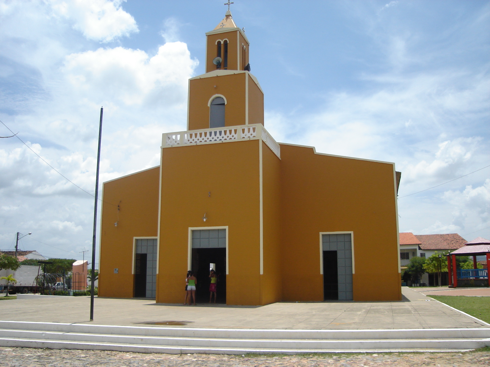
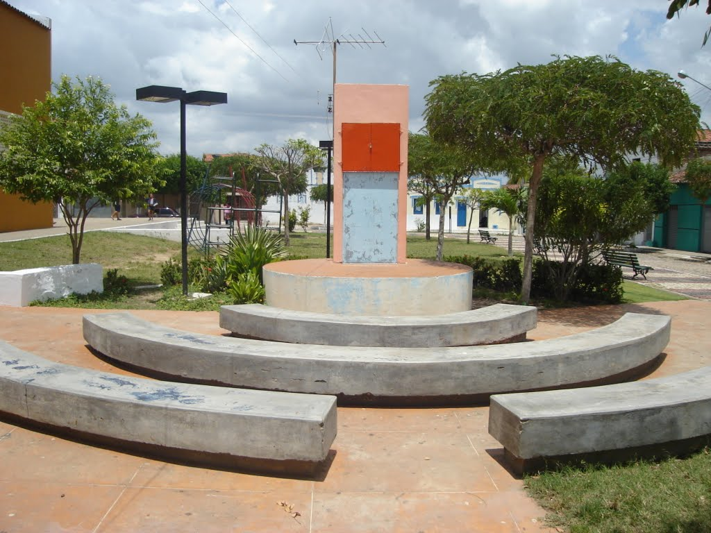

Informações técnicas sobre relevo, população, IDH etc.
| INFORMAÇÕES | |
|---|---|
| Municípios limítrofes | Norte: Itapajé, Leste: Apuiarés e General Sampaio , Sul: Canindé, Oeste: Irauçuba |
| Fundação | 28 de dezembro de 1987 (33 anos) |
| Área total | 750,605 km² |
| Clima | Não Disponível |
| IDH | 0,611 — médio |
| PIB | R$ 43 142,835 mil |
| INFORMAÇÕES TERRITORIAIS | |
|---|---|
| Número de habitantes | 19.187 habitantes |
| Superfície de Tejuçuoca |
78 174 hectares
781,74 km² (301,83 sq mi) |
| Densidade populacional | 22,4 hab./km² |
| Altitude de Tejuçuoca | 140 metros de altitude |
| Coordenadas geográficas decimais |
Latitude:
-3.98644
Longitude: -39.5718 |
| Coordenadas geográficas sexagesimais | Latitude: 3° 59' 11'' Sul , Longitude: 39° 34' 18'' Oeste |
| INFORMAÇÕES DO MUNICÍPIO | |
|---|---|
| Endereço da Prefeitura Municipal de Tejuçuoca |
Tejuçuoca
Prefeitura de Tejuçuoca
Rua Mamede Rodrigues Teixeira, 489 TEJUÇUOCA - CE, 62610-000 Brasil Work +55 85 3323-1127 Fax (85) 3323-1127 |
| Telefone da prefeitura |
(85) 3323-1287
Internacional: +55 85 3323-1287 |
| Fax |
(85) 3323-1127
Internacional: +55 85 3323-1127 |
| Endereço eletrônico da prefeitura |
pm_tejuçuoca@hotmail.com
|
| Site oficial do município | tejucuoca.ce.gov.br |
| INFORMAÇÕES DO ADMINISTRATIVAS | ||
|---|---|---|
| Prefeito de Fortaleza | JOSE ANTUNIZIO DE BRITO | |
| Partido politico | PSD | |
| INFORMAÇÕES DE TRANSPORTE | |
|---|---|
| Transporte urbano disponível | - |
| Aeroporto |
Aeroporto Internacional Pinto Martins
117.8 km
Aeroporto de Sobral
91.6 km
Aeroporto Pinto Martins
185.5 km
|
| INFORMAÇÕES DE DISTÂNCIA A OUTRAS CIDADES | ||
|---|---|---|
| São Paulo : 2306 km | Rio de Janeiro : 2142 km | Brasília : 1600 km |
| Salvador : 1007 km | Belo Horizonte : 1825 km | Manaus : 2275 km |
| Curitiba : 2602 km | Fortaleza : 118 km mais perto | Goiânia : 1765 km |
| Belém : 1032 km | Porto Alegre : 3148 km | Guarulhos : 2285 km |
| Campinas : 2255 km | São Luís : 551 km | Recife : 689 km |
| Distância calculada em linha reta! | ||
Conheça mais sobre a história de Tejuçuoca.
Originalmente habitada por ameríndios, a ocupação de origem portuguesa da região começou a partir da fixação dos primeiros indivíduos nas proximidades do Riacho do Paulo, afluente do Rio Curu, os quais formaram um arraial. A vinda destes primeiros ocupantes de origem portuguesa tem início por volta do começo do século XIX. No início do século XX, a região foi refúgio de cangaceiros que fugiam da ação da polícia.
Cronologia
- 4 de dezembro de 1933: elevação à categoria de vila pelo decreto-lei 1 156;
- 3 de julho de 1963: elevação à categoria de município pela lei 6 392.
- 14 de dezembro de 1965: suprimida, antes da instalação, a elevação à categoria de município através da lei 8 339.
- 28 de dezembro de 1987: restauração da elevação à categoria de município através da lei 11 414.
Saiba mais sobre os melhores lugares e o que fazer em Tejuçuoca.
Parque Ecológico Furna dos Ossos
Igreja de São Pedro em Tejuçuoca-CE
Praça de Tejuçuoca-CE
Veja como chegar nos melhores pontos de Tejuçuoca.